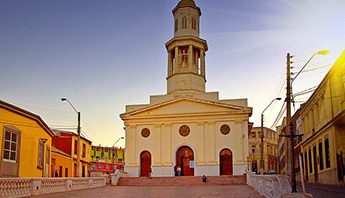
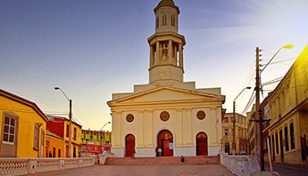

NUESTRO BARRIO
Barrio La Matriz
Alrededor de la iglesia se fueron agrupando las primeras familias criollas, dando así inicio al desarrollo urbano de Valparaíso.
El Barrio Puerto es el más antiguo de Valparaíso, por lo que sus casa y edificios son pintorescos y es la muestra pura de lo que fué y hoy es nuestra ciudad. El escenario actual es absolutamente ameno, muestra un Valparaíso en que el tiempo se ha detenido, para dar paso a una vida sin apuros, en el que convive un amplio comercio y vecinos que pasean por el lugar, y que se reúnen todos los días en la Iglesia La Matriz del Salvador.
Vecinos y amigos
La insignificante caleta colonial de los siglos XVII y XVIII, de a poco fue poblándose de casas que se sumaban a las bodegas de almacenaje portuario, por otra parte las congregaciones religiosas avecindadas construyeron sus conventos: Agustinos, franciscanos, jesuitas y dominicos, rodeando el templo parroquial que influía en el barrio. La parroquia fue testigo del crecimiento del sector que muy pronto se convertiría en el corazón de una ciudad a mediados del siglo XIX.
“Morfológicamente, el barrio es considerado como complemento de la iglesia. Las iglesias acompañaban al puerto desde su génesis y han estado en todas las etapas desde su desarrollo, estos conjuntos son la presencia de la consolidación de una zona típica”.
GALERÍA DE IMÁGENES

 



13 Dic 2014, 12:45
Se necesitan voluntarios para Comedor 421 a las 13:00 hrs.
13 Dic 2014, 12:45
Se necesitan voluntarios para Comedor 421 a las 13:00 hrs.
13 Dic 2014, 12:45
Se necesitan voluntarios para Comedor 421 a las 13:00 hrs.
13 Dic 2014, 12:45
Se necesitan voluntarios para Comedor 421 a las 13:00 hrs.
13 Dic 2014, 12:45
Se necesitan voluntarios para Comedor 421 a las 13:00 hrs.